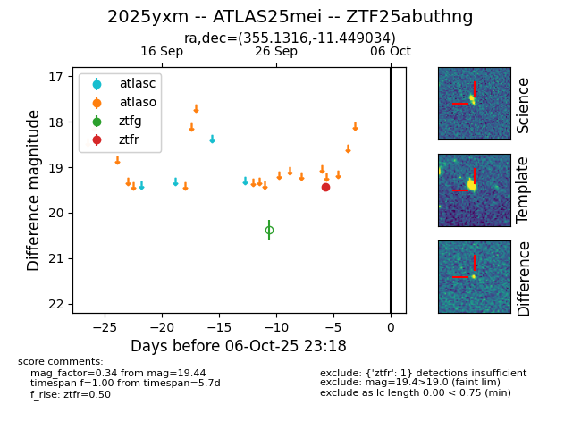

FINK: ZTF25abuthng
Lasair: ZTF25abuthng
ALeRCE: ZTF25abuthng
TNS: 2025yxm
YSE: 2025yxm
ZTF25abuthng (ztf,fink)
2025yxm (tns,yse)
ATLAS25mei (atlas)
equatorial (ra, dec) = (355.1316,-11.44903)
galactic (l, b) = (72.7750,-67.12696)

last ztfr=19.44
1 ztfr detections